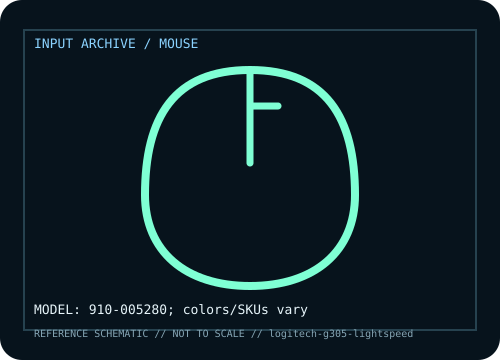

[ MICE AND TRACKBALLS // IDENTIFIED COMPONENT ]
Logitech G305 LIGHTSPEED Wireless Gaming Mouse
Compact six-button wireless optical mouse using LIGHTSPEED radio and a replaceable AA cell.

MODEL IDENTIFICATION: Manufacturer model / identifier: 910-005280; colors/SKUs vary. Compare the unit label, regional suffix, and revision against manufacturer documentation before repair or compatibility claims.
Model specifications
| Catalog subcategory | Mice and trackballs |
|---|---|
| Exact model / ID | 910-005280; colors/SKUs vary |
| Model-specific features | HERO sensor up to 12,000 DPI, six programmable buttons, 2.4 GHz receiver, AA power. |
| Interface and host support | USB-A nano receiver; no Bluetooth. G HUB configures buttons/DPI; adapter may be needed for USB-C-only hosts. |
| Revision / driver caveat | Verify 910-005280 and receiver; colors are variants and a generic 2.4 GHz dongle will not pair. |
Preservation and service notes
Remove AA for storage; check contacts; keep original receiver; clean sensor and feet without scraping.
Record the as-found label, accessories, host OS, driver or firmware version, and test method. Separate observed condition from published specifications; family-level claims are not proof of an individual unit's revision.
Manufacturer source
- Logitech G305 LIGHTSPEED Wireless Gaming Mouse — manufacturer model pageModel-specific manufacturer reference for identifying specifications, regional SKU, and linked current support documentation.
Manufacturer pages can change or retire. Preserve the applicable manual and note its revision when documenting a physical device.